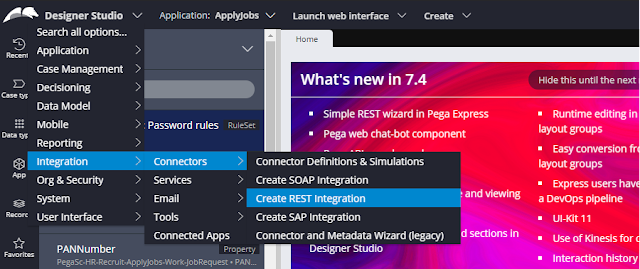
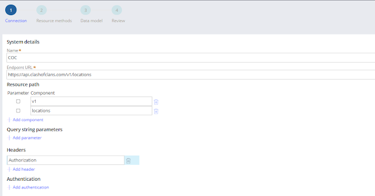
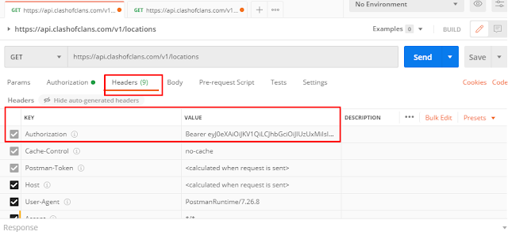
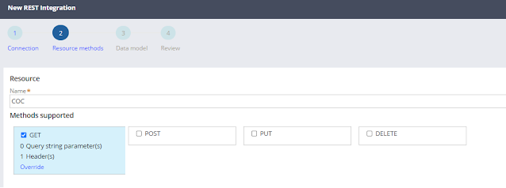
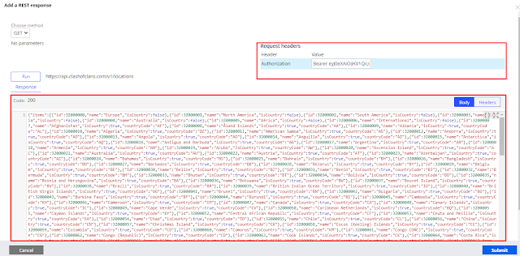
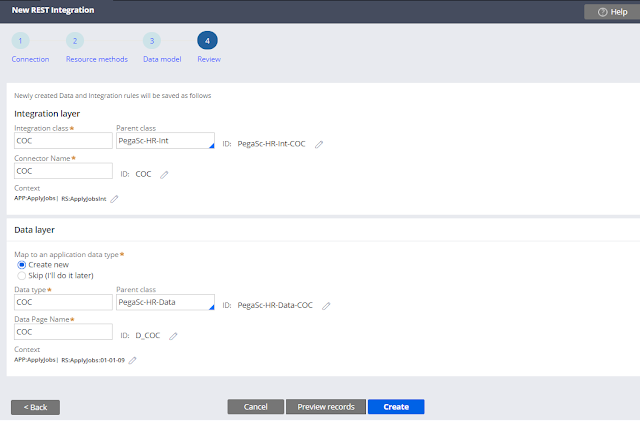

Mapear serviço REST
Para mapear um serviço REST primeiro temos que criar as regras de integração.
1. Abra o Designer Studio > Integration > Connectors > Create REST Integration

2. Forneça o nome do serviço e endpoint URL. Se tiver autenticação separada ou informações no header deve ser passado.

3. Antes de mapear no Pega deve ser testado no postman.

4. Forneça o nome do recurso e selecione o método (GET, POST, PUT, DELETE) que deseja usar para esta integração.

5. Temos 2 opções para adicionar o modelo de dados. Você pode adicionar o request e response do Postman ou apenas o request e executar (run) para gerar automático o response.

6. Outra tela importante, para montar a estrutura de classes.
Certifique-se de que, para a camada de integração, a classe Int esteja selecionada como classe pai e o contexto como conjunto de regras de integração.
Deve ser definido a classe do Connect REST, nome, application e ruleset ou versão. Também deve ser definido as mesmas informações abaixo para o Data Page.

7. Se necessário, visualize os registros e clique em criar. Veja abaixo a lista de regras que a Pega criou
- Data Page
- Connect Rest
- Classe necessária para integração
- Propriedade necessária para integração
- Data Transform de Response
- Data Transform de Request